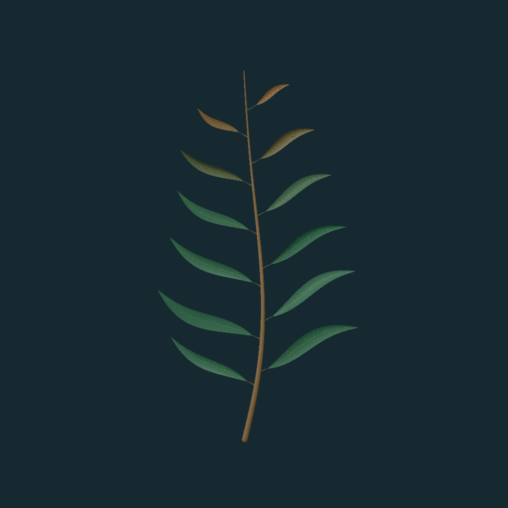

Saved output is visible immediately. New species remain candidates until coordinator review and your decision.
Editable model source
Open the model definition · Changes below are evaluated by Vibe in this browser.

Saved output is visible immediately. New species remain candidates until coordinator review and your decision.
Open the model definition · Changes below are evaluated by Vibe in this browser.